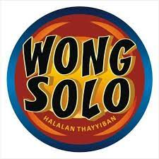
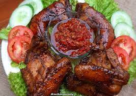
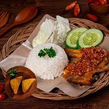
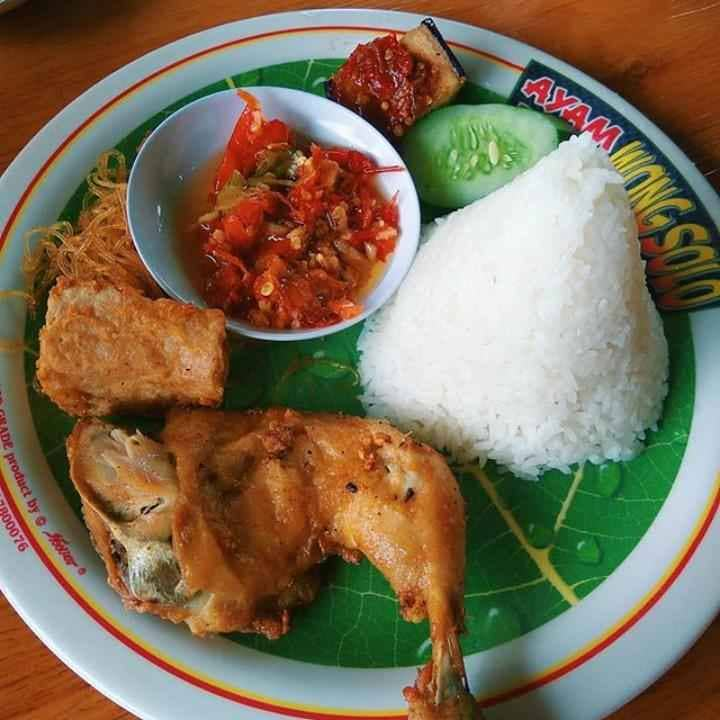

Rumah Makan Wong Solo

Restoran Ayam Bakar Wong Solo didirikan oleh Puspo Wardoyo pada bulan April tahun 1991. Restoran Ayam Bakar Wong
Solo mampu mengembangkan usahanya dan memperluas cabang restoran berkat bantuan modal dari Bank dan lembaga
keuangan. Kesuksesan Ayam Bakar Wong Solo tidak hanya terdapat pada restorannya saja, pemilik sekaligus founder
dari Ayam Bakar Wong Solo juga mendapat penghargaan sebagai “50 Pengusaha Terbaik” dari Presiden ke-5 Republik
Indonesia Megawati Soekarno Putri.
Daftar Menu Makanan :
- Paket Ayam Bakar
- Paket Ayam penyet
- Paket Ayam Goreng
Paket Ayam Bakar

Resep Ayam bakar ini memiliki cita rasa manis dan gurih yang khas. Sebab pembuatannya memakai air kelapa, gula
merah,
dan kecap manis. Penyajiannya biasanya dengan lalapan dan sambal bawang.
Bahan Ayam Bakar
- Bahan 10 potong ayam, boleh dicampur bagian dada, paha, dan sayap
- 400 ml air kelapa
- 3 sdm gula merah
- 4 sdm kecap manis
- 2 sdm air asam jawa
- Garam secukupnya
- 3 sdm minyak untuk menumis
Bahan Sambel Merah
- 10 buah cabai merah keriting
- 9 buah cabai rawit merah
- 8 butir bawang merah
- 4 siung bawang putih
- minyak goreng
- 50 g tomat merah, potong-potong
- 2 sdm gula merah, sisir halus
- 1 sdt garam
- ½ sdt terasi bakar
- 6 lembar daun jeruk
- 2 cm lengkuas, memarkan
Paket Ayam Penyet

Resep sambal ayam penyet wong solo yang populer. Bahan-bahan sangat sederhana lho ternyata, hanya bumbu dapur
yang sehari-hari kita gunakan
Bahan Ayam Ungkep
- 1 ekor ayam daging (potong 8 bagian)
- 2 jari kunyit (iris)
- 2 jari jahe (iris)
- 4 lembar daun salam
- Secukupnya garam dan penyedap
- 1500 ml air
Bahan Sambal Penyet
- 100 gram cabe rawit
- 1 bongkol bawang putih
- Secukupnya garam, gula dan penyedap
- Minyak goreng
Paket Ayam Goreng

Resep pecinta kuliner ayam goreng memiliki bahan-bahan yang sangat mudah ditemukan bahkan bahan tersebut kita
gunakan setiap hari saat memasak didapur lho.
Bahan Ayam Goreng
- 1 ekor ayam daging (potong 8 bagian)
- 6 siung bawang putih, haluskan
- 3 ruas kunyit, haluskan
- 1/2 sdt terasi
- 1 sdm ketumbar bubuk
- 1 ruas lengkuas
- 5 lembar daun jeruk
- 2 lembar daun salam
- Gula, garam secukupnya